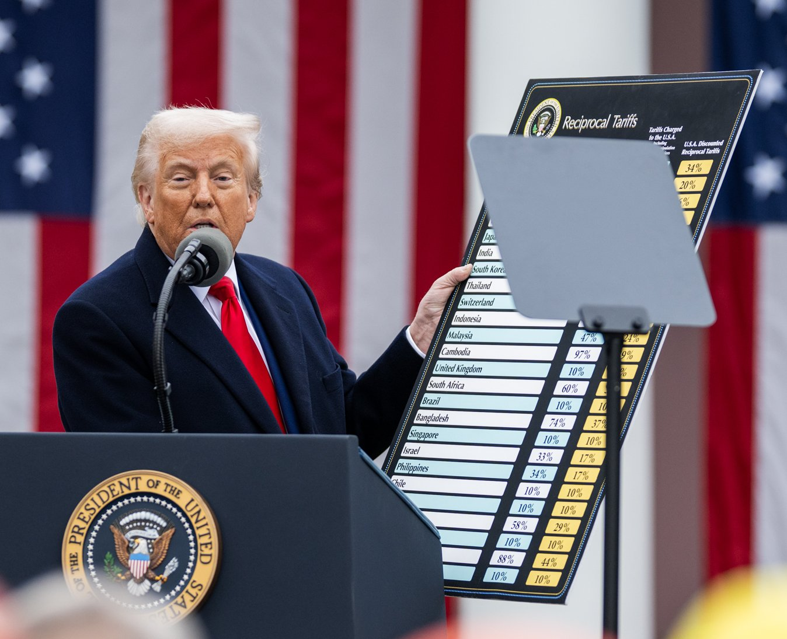

TRADE & POLICY · NORTH AMERICA · 2026.10
美加關稅戰升級：鋼鋁互課 50%，談判凍結
鋼鐵潮流工作室 · 發布 2026.10.04

本期重點
8 月 22 日美加貿易談判在最後關頭破局後，兩國互加 50% 關稅，美國 9 月 29 日再禁止約 10 億美元加拿大商品進口。截至 10 月初，正式談判仍然凍結。
- 美國動用罕見法源。 川普援引 1930 年關稅法第 338 條（從未有總統動用過），對約 200 億美元加拿大商品課 50% 關稅。
- 加拿大「等額報復」。 9 月 8 日起對約 276 億加元、629 項美國商品課 15%／25%／50%，美國鋼鋁製品從 25% 加倍到 50%。
- 鋼鋁兩邊都是 50%。 美國對加拿大鋼、鋁依 232 條款課 50% 已逾一年；這次加拿大也把對美國鋼鋁拉到同一水準。
- 加拿大鋼業受衝擊。 Stelco 10 月 1 日宣布漢密爾頓廠裁員 350 人，小型加工業者預估鋼材成本 2027 年可能翻倍。
事件時間軸
| 日期 | 事件 |
|---|---|
| 7/1 | 美加墨協定（USMCA，加拿大稱 CUSMA）首次六年聯合檢討。美國拒絕延長 16 年，改為 2036 年前每年檢討；加拿大的優先訴求是撤除鋼、鋁、汽車、木材關稅。 |
| 7/20 | 川普簽署三項公告，對加拿大商品加徵 50% 關稅，原訂 8/19 生效，後延到 8/22。 |
| 8/21–22 | 談判破局。美方指加拿大臨時加碼，卡尼則指美方臨時改條件，宣布暫停談判。8/22 起美國依第 338 條對乳製品、酒類、水泥、冰球用具等課 50%；能源、鉀肥、關鍵礦物豁免。 |
| 9/8 | 加拿大報復關稅生效：約 276 億加元、629 項美國商品，稅率 15%／25%／50%，涵蓋鋼鋁、乳製品、家電、農機、紙漿與紙、電子產品。 |
| 9/15 | 美國追加 50% 關稅品項：起司、摩托艇、紙類、鋁及鋼製品、床墊與家具。 |
| 9/29 | 美國禁止約 9.67 億美元加拿大商品進口，87% 是酒類，另有乳清、糖蜜與 BRP 的 Can-Am 三輪摩托車。 |
| 9/30 | 卡尼表示在 11/3 美國期中選舉前不會再加壓，但不排除日後行動。 |
鋼鋁關稅現況
| 方向 | 品項 | 稅率 | 說明 |
|---|---|---|---|
| 美國 → 加拿大 | 鋼、鋁（232 條款） | 50% | 2025 年 6 月 4 日起 |
| 美國 → 加拿大 | 銅半成品與衍生品 | 50% | 2025 年 8 月 1 日起 |
| 美國 → 加拿大 | 汽車（232 條款） | 25% | 2025 年 4 月 3 日起 |
| 美國 → 加拿大 | 軟木材 | 10% 起 | 家具、櫥櫃 25–50% |
| 加拿大 → 美國 | 鋼、鋁製品 | 50% | 9/8 起由 25% 加倍，超過 300 項 |
| 加拿大 → 美國 | 鋼、鋁衍生品 | 25% | 9/8 起 |
符合美加墨協定原產地規定的加拿大商品可免美國的「對等關稅」，但仍要繳 232 金屬關稅。
產業影響
- 加拿大鋼廠與加工業。 Stelco 漢密爾頓廠裁員 350 人。多倫多加工業者 Conquest Steel 表示鋼價過去 12 個月持續上漲、交期拉長，「2027 年成本可能翻倍」。
- 加拿大自身的進口配額。 加拿大 2025 年 6 月起對非自貿協定國家的進口鋼材實施配額，超量部分課 50%，副作用是國內下游取得材料更困難；財政部表示正研擬補救機制。
- 美國鋁業高度依賴加拿大。 2026 上半年美國未鍛軋鋁進口有 60% 來自加拿大，美國國內鋁需求約 85% 靠進口，短期難以靠關稅重建產能。
- 汽車供應鏈雙輸。 加拿大生產的汽車九成以上、汽車零件六成出口美國，零件在邊境來回多次，關稅層層累加。
- 美國鋼業低調。 美國鋼鋁業團體對加拿大的報復保持沉默；業界原本預期協議會把美國對加拿大鋼鋁的關稅降到 25%。
談判現況
正式談判 8 月 21 日起中止，雙方只維持聯繫。川普稱加拿大會回來「道歉」；加拿大貿易部長 LeBlanc 回應「不會為保護加拿大工人道歉」。卡尼表示不會倉促達成協議，也不會把回到過去的美加關係當作目標。目前約 80% 的雙邊貿易仍未受影響，主要是能源與符合協定原產地規定的商品。
對台灣鋼鐵業的觀察
以下為鋼鐵潮流的分析，非報導內容：北美內部互相課稅、加拿大限制非自貿國家鋼材，可能讓北美鋼價維持高檔並帶動區域內轉單；但台灣鋼材出口加拿大同樣受配額外 50% 的限制，短期難直接受惠。後續值得留意：
- 11/3 美國期中選舉後，美加是否重啟談判
- 加拿大對非自貿國家鋼材配額是否調整
- 美加墨協定年度檢討，以及美國與墨西哥的鋼鋁條款談判結果
資料來源
- Axios：U.S.-Canada trade talks collapse, massive tariffs to take effect（2026-08-22）
- Blakes：U.S.–Canada Tariffs: Timeline of Key Dates and Documents
- Manufacturing Dive：Canada targets US steel and aluminum as part of retaliatory tariffs
- 聯合報：最高50%！加國對美祭報復關稅 總理卡尼諷：美國簽名用鉛筆寫的
- 世界日報：美對加新關稅新增起司、摩托艇等 卡尼：不倉促達協議
- BNN Bloomberg：Trump's import bans on Canadian liquor, whey, motorcycles take effect（2026-09-29）
- CP24：Small Canadian steel companies facing U.S. tariffs（2026-10-01）
- White & Case：USMCA 2026 Joint Review
- Hashtag Investing：Carney says Canada won't add trade pressure as U.S. midterms approach（2026-09-30）
- OilPrice：Canada Tariffs Deepen North America's Steel and Aluminum Squeeze
內容僅供產業資訊參考，不構成投資建議。新聞版權屬原出處所有。